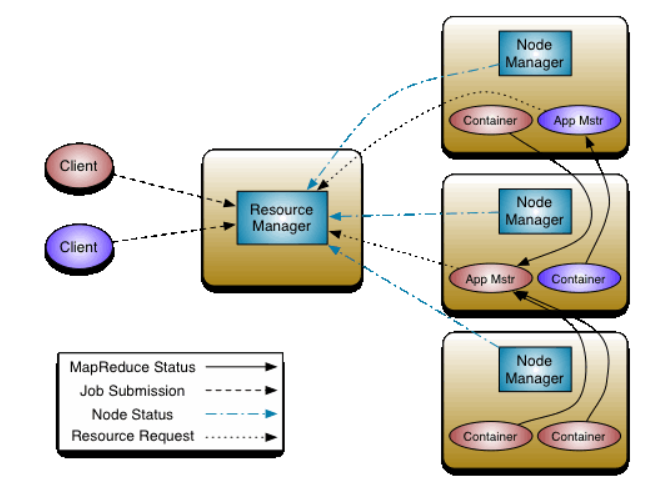
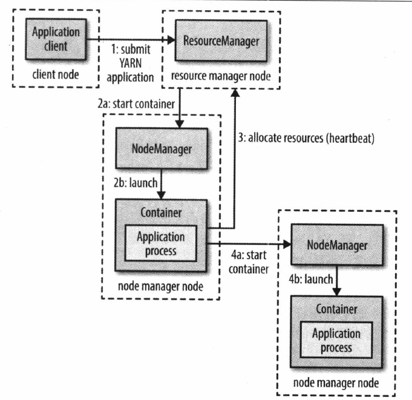

YARN基本组件
YARN的基本理念是将资源管理和任务调度/监控分成两个独立的服务：全局的资源管理器（ResoureManager）和单独任务的ApplicationMaster。 一个应用既是单独的一个任务，也是一个DAG的任务。

YARN总体上仍然是master/slave结构，在整个资源管理框架中，ResourceManager是master，NodeManager是slave。ResourceManager负责对各个NodeManager上资源进行统一管理和调度。当用户提交一个应用程序时，需要提供一个用以跟踪和管理这个程序的ApplicationMaster，其负责向ResourceManager申请资源，并要求NodeManager启动可以占用一定资源的任务。由于不同的ApplicationMaster被分布到不同的节点上，因此他们之间不会互相影响。
ResourceManger
ResourceManager是一个全局资源管理器，负责整个系统的资源管理和分配，包括处理客户端的请求、启动\监控Applicationmaster、监控NodeManager、资源的分配和调度。其主要有两个组件构成：调度器（Scheduler）和应用程序管理器(ApplicationsMaster)。
- 调度器
调度器根据容量、队列等限制条件（如每个队列分配一定的资源、最多执行一定数量的作业等），将系统中的资源分配给各个正在运行的应用程序。该调度器是一个“纯调度器”，其不再从事任何具体应用程序相关的工作，比如不负责监控或跟踪应用的执行状态等，也不负责重新启动因应用执行失败或硬件故障而产生的失败任务。调度器仅根据各个应用的资源需求进行资源分配，资源分配单位用“资源容器”（Resource Container，简称Container）表示。Container是一个动态资源分配单位，它将内存、CPU、磁盘、网络等资源封装在一起，从而限定每个任务使用的资源量。 - 应用程序管理器
应用程序管理器负责整个系统中所有应用程序，包括应用程序提交、与调度器协商资源以启动ApplicationMaster、监控ApplicationMaster运行状态并在失败时重新启动它等。
ApplicationMaster
管理YARN内运行的应用程序的每个实例。其主要是为应用程序申请资源并进一步分配给内部任务，负责协调来自ResoureManager的资源，并通过NodeManger监控Container的执行和资源的使用情况。
NodeManager
整个集群中有多个NodeManager，负责每个节点上的资源和使用。
功能：
- 单个节点上的资源管理和任务；
- 处理来自
ResourceManager的命令； - 处理来自
ApplicationMaster的命令。
NodeManager管理着抽象容器，这些抽象容器代表着一些特定程序使用针对每个节点的资源。NodeManager定时向ResourceManager汇报本节点上的资源使用情况和各个Container的运行状态。
Container
Container是YARN中的资源抽象，它封装了某个节点上的多维度资源。当ApplicationManager向ResourceManager申请资源时，ResourceManager为ApplicationManager返回的资源便是用Container表示的。YARN会为每个任务分配一个Container，且该任务只能使用Container中的资源。其是一个动态资源划分单位，是根据应用程序的需求动态生成的。
YARN的资源管理
- 资源调度和隔离是YARN作为一个资源管理系统，最重要最基础的两个功能。资源调度由
ResourceManager完成，资源隔离由NodeManager完成。ResourceManager将某个NodeManager上资源分配给任务后，NodeManager需按照要求为任务提供相应的资源，甚至保证这些资源具有独占性，为任务提供基础和保证。- 谈及资源时，主要是内存、CPU、io三种资源。YARN目前仅支持内存、CPU两种资源管理调度。
- 内存资源多少决定任务的成败；CPU多少决定任务的快慢。
YARN的内存管理
YARN允许用户配置每个节点上可用的物理内存资源。因为一个节点上内存会被若干个服务共享，比如一部分给YARN，一部分给hdfs等。YARN配置的只是自己可用的，配置参数主要有：
yarn.nodemanager.resource.memory-mb：表示节点上YARN可以使用的物理内存总量；yarn.scheduler.minimum-allocation-mb：单个任务可以使用最小物理内存量；yarn.scheduler.maximum-allocation-mb：单个任务可以申请的最多的内存量。
YARN的CPU管理
用户提交应用时，可以指定每个任务需要的虚拟CPU数。相关配置参数如下：
yarn.nodemanager.resource.cpu-vcores：表示该节点上可以使用的虚拟CPU个数；yarn.scheduler.minimum-allocation-vcores：表示单个任务可以申请的最小CPU个数；yarn.scheduler.maximum-allocation-vcores：表示单个任务可以申请最多虚拟CPU个数。
YARN程序运行机制

首先，客户端联系ResoureManager，要求它运行一个ApplicationManager进程；然后，ResoureManager找到一个能够在Container中启动ApplicationMaster的NodeManager（步骤2a和2b）。ApplicationMaster一旦运行起来后能做些什么依赖于应用本身。有可能是在所处的容器中简单运行一个计算，并将结果返回给客户端；或者向ResoureManager请求更多的Container（步骤3），以用于运行一个分布式计算（步骤4a和4b）。
YARN本身不会为应用的各个部分彼此间通信提供任何手段。大多数重要的YARN应用使用某种形式的远程通信机制（例如Hadoop的RPC层）来向客户端传递状态更新和返回结果。